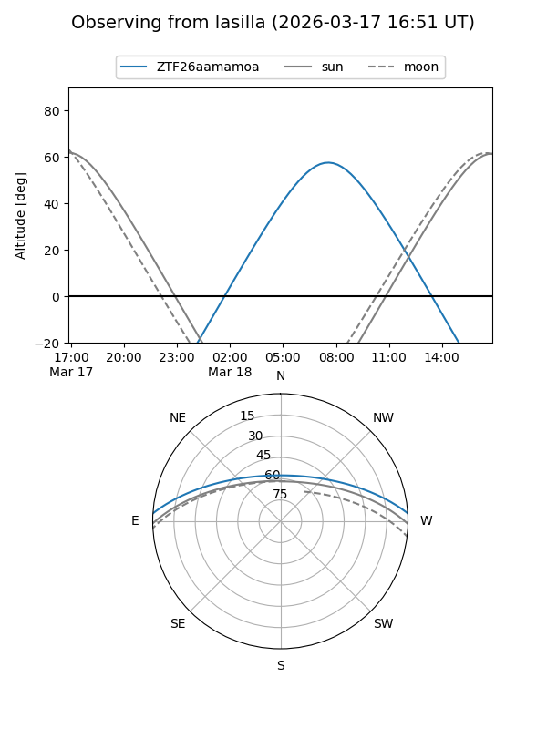
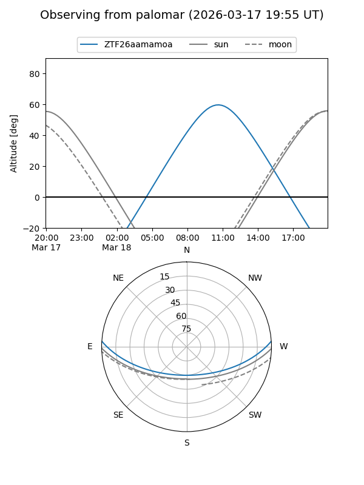

ZTF26aamamoa
Target ZTF26aamamoa at 2026-03-18 13:08
Aliases and brokers:
FINK: link
Lasair: link
ALeRCE: link
alt names
ZTF26aamamoa (ztf,fink_ztf)
Coordinates:
equatorial (ra, dec) = 218.1898,+3.23943
equatorial (HMS+DMS) = 14:32:45.55,+03:14:21.93
galactic (l, b) = (352.7146,+55.98621)
Flags:
Photometry:
last ztfg=16.89
1 ztfg detections
Lightcurve
Visibility


Additional plots